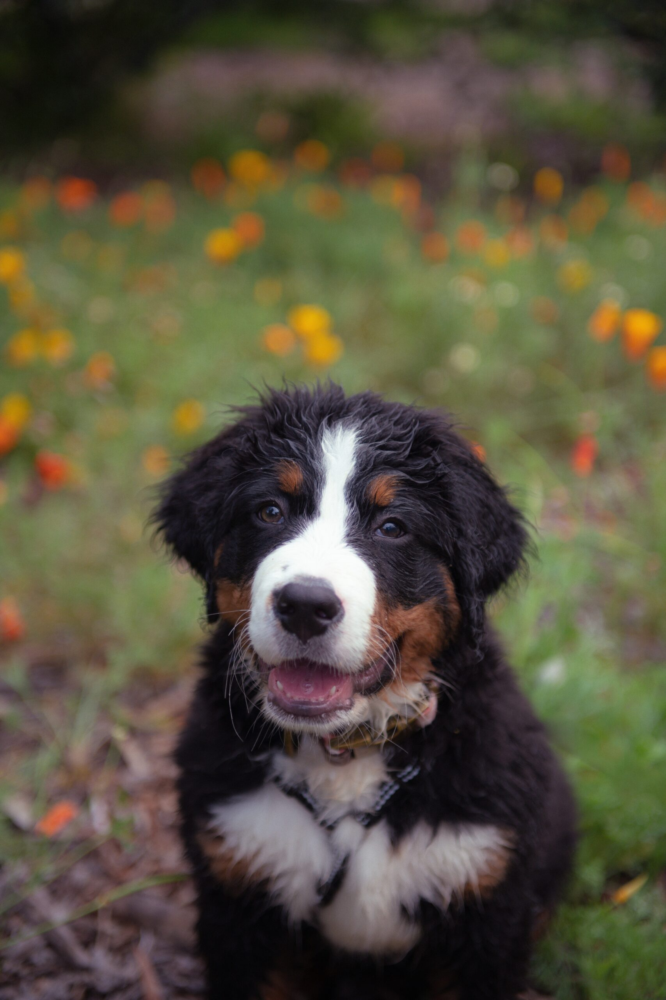
Veterinary Hospice & Euthanasia Services
At Until We Meet Again, we understand that saying goodbye to a beloved pet is one of life’s hardest moments. Our compassionate team is dedicated to providing personalized care through quality-of-life evaluations, comfort-focused hospice support, general exams, and vaccinations. When needed, we offer gentle, individualized euthanasia services to guide families through difficult end-of-life decisions. Our mission is to create a peaceful, respectful environment where pets feel safe, loved, and dignified in their final moments—because every companion deserves tender care until the very end.
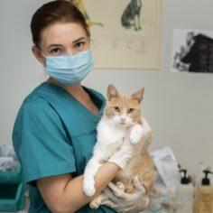
Gentle hospice care focused on comfort, dignity, and quality of life for your pet.
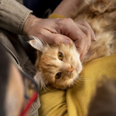
Thoughtful aftercare care providing comfort and guidance during difficult moments.
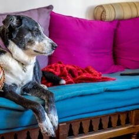
Compassionate end-of-life care for your beloved pet in the comfort of home.
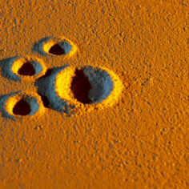
Meaningful keepsakes to remember your pet—urns, pawprints, plaques, and jewelry.
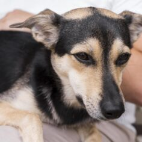
Compassionate in-home veterinary care for your pet's comfort and well-being.
We offer gentle support and clear guidance during difficult moments, prioritizing your pet’s comfort.
We provide warm, peaceful in-home support during your pet’s final moments
We help you honour your pet with simple, meaningful memorial options.
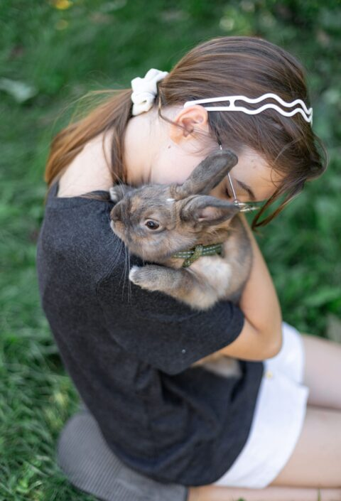
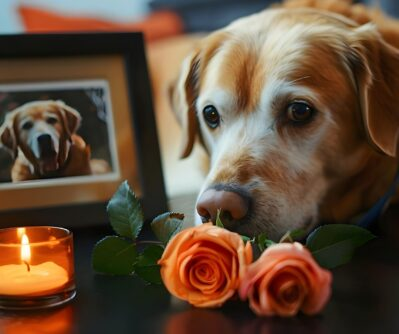
With over 100,000 small animal appointments, Dr. Bhatia has dedicated his career to delivering exceptional medical care and outcomes. His compassionate approach ensures every pet receives personalized attention and treatment.
Reshma Gajavelli, BVSc, is a compassionate Veterinary Technician with a strong clinical foundation, earning her degree from PV Narasimha Rao Veterinary University in Hyderabad, India. She moved to Canada to continue her education and advance her career in veterinary medicine.
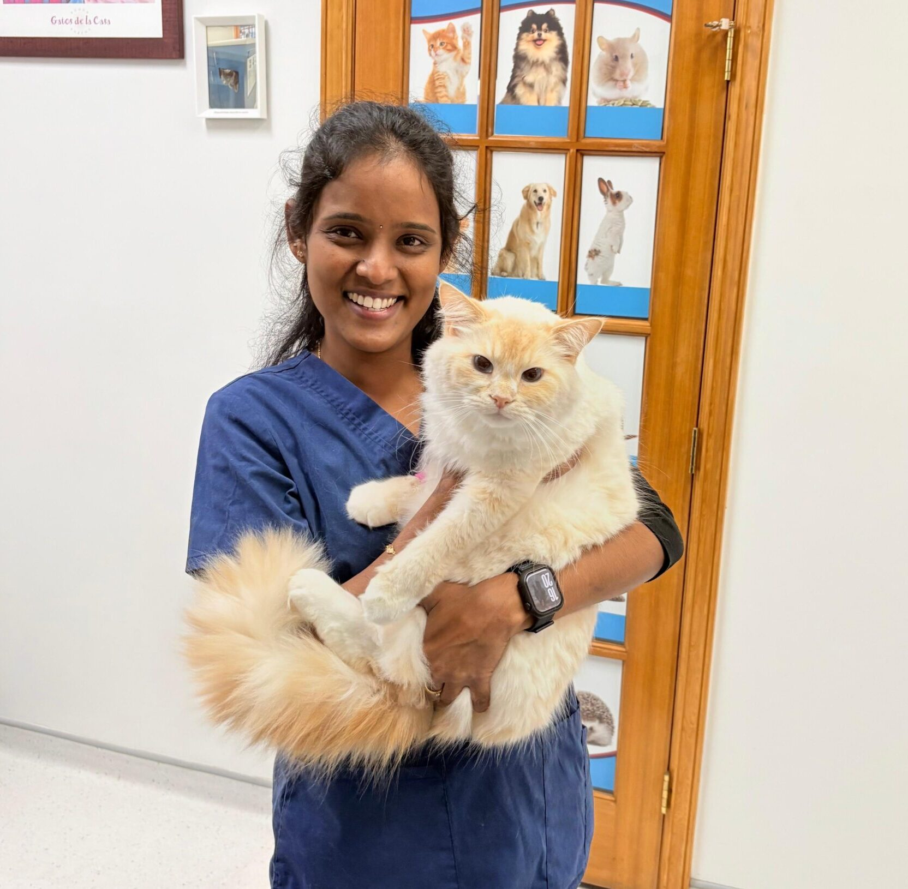
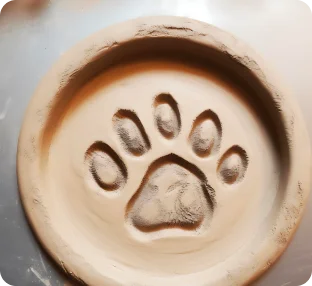
Tiny paw prints leave the biggest marks on hearts.
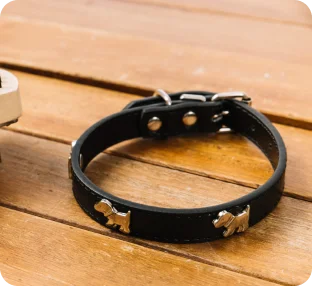
Love is kept safe in every piece.
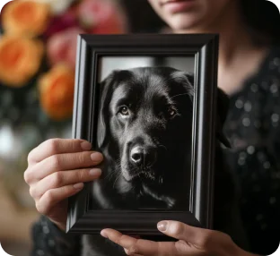
Moments saved, beautifully framed.
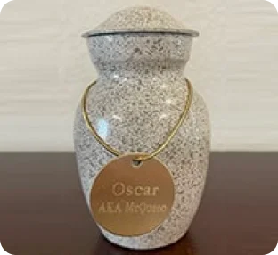
A gentle place for precious memories.